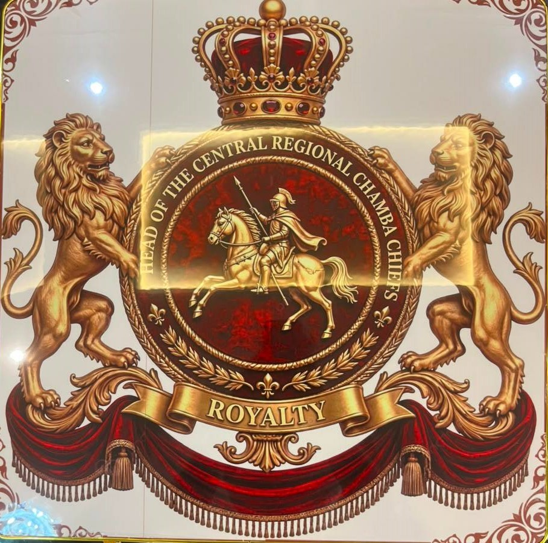

Promoted Community Unity and Peace
Successfully mediated inter-faith and chieftaincy disputes, fostering harmonious relationships and peaceful coexistence among diverse ethnic and religious groups.

Welcome to the official website of Chief Ibrahim Onyikatogo, Head of the Central Regional Chamba Chiefs in Ghana. Here you can read his biography, achievements, citations and awards, and find how to contact him.
View certificates Get in touch.jpg)
CHIEF IBRAHIM YAHYA ONYIKATOGO I, HEAD OF CENTRAL REGIONAL CHAMBA CHIEFS.
Whereas the Sarikin Zangon Of Cape Coast Mahmmud Dandey Mazawajay IV by virtue of Chieftaincy Act 2008 (Act 759 Section 51(1) and Section 57 (1) of the Ghana 1992 Constitution who was sworn in by a High Court Judge of competent Jurisdiction at the Cape Coast High Court as the SARIKIN ZONGO on the 16th April,2010. Per request from the National Chamba Chief Zakaria Tahiru Kuta III and Chamba Chiefs/Elders and the Central Regional Zongo Chiefs having duly selected and appointed CHIEF IBRAHIM YAHYA ONYIKATOGO I of Millennium City in the Gomoa Nyanyano in the Central Region as HEAD OF THE CENTRAL REGIONAL CHAMBA CHIEFS.
CHIEF IBRAHIM YAHYA ONYIKATOGO I per the advice of Head of the Central Regional Zongo Chiefs, is mandated to facilitate the development of the Chamba communities in the Central Region with emphasis on education and peaceful co-existence with all the Region in particular and Ghana as a whole.
CHIEF IBRAHIM YAHYA ONYIKATOGO I by this elevation shall uphold the sovereignty and integrity of the Republic Of Ghana and shall truly and faithfully perform the functions of his office without any fear of favour, affection or ill-will.
May God Help us
Bless our Homeland Ghana
on 21st September, 2019 at Cape Coast.
Successfully mediated inter-faith and chieftaincy disputes, fostering harmonious relationships and peaceful coexistence among diverse ethnic and religious groups.
Led initiatives to build local basic schools and Islamic learning centers, while establishing scholarship schemes to support needy students.
Partnered with local government agencies and NGOs to secure clean water facilities and renovate the community clinic, improving overall public health and wellbeing.
.jpg)
.jpg)
.jpg)